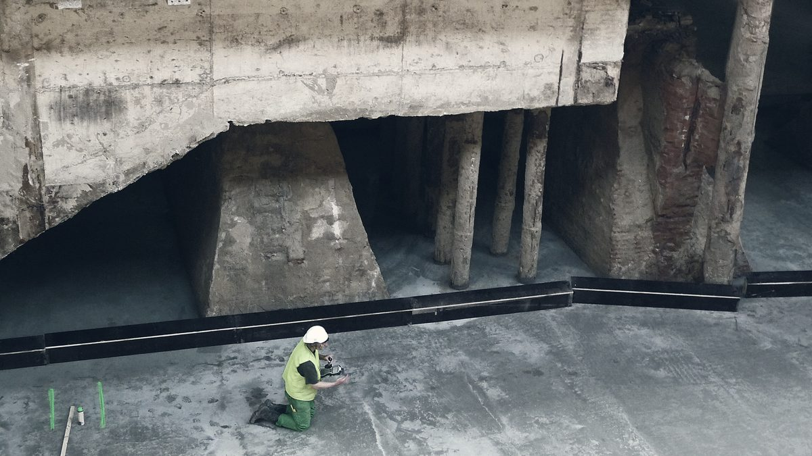

Regulace
Od 2. srpna 2026 musíte označovat, co psala AI
2. srpna 2026
Povinnost označovat obsah vytvořený AI platí od 2. srpna 2026. Přísnější pravidla pro vysoce rizikové systémy se naopak odložila.

Nařízení EU o umělé inteligenci, známé jako AI Act, se nezavádí najednou. Postupuje po etapách a každá etapa přináší jiné povinnosti. Od února 2025 platí zákaz vybraných praktik podle článku 5. Od srpna 2025 platí povinnosti pro poskytovatele obecných modelů AI. A od 2. srpna 2026 začíná platit článek 50, tedy povinnosti průhlednosti: informovat o tom, že se používá AI, a označovat obsah, který AI vytvořila.
Krátce předtím se pravidla ještě posunula. Nařízení (EU) 2026/1744, takzvaný digitální omnibus k AI, vyšlo v Úředním věstníku 24. července 2026 a v platnost vstoupilo 27. července 2026. Odložilo povinnosti pro vysoce rizikové systémy. Samostatné vysoce rizikové systémy podle přílohy III se z 2. srpna 2026 posouvají na 2. prosince 2027. AI zabudovaná do výrobků, které již spadají pod evropské předpisy o bezpečnosti výrobků podle přílohy I, se posouvá na 2. srpna 2028.
Výsledek je jednoduchý. To lehčí platí nyní, to náročnější až později. Průhlednost a označování jsou od 2. srpna 2026 živé povinnosti. Posouzení shody, systém řízení rizik a zajištění lidského dohledu, tedy ta část, které se řada firem obávala nejvíce, zatím na řadu nepřichází.
Co to znamená pro vaši firmu
Pokud používáte AI na popisy produktů, na odpovědi zákazníkům nebo na přípravu dokumentů, režim vysokého rizika se vás netýká. Týká se vás průhlednost, a ta platí od 2. srpna 2026.
V praxi jde o dvě věci. Člověk, který komunikuje s vaším chatbotem, musí vědět, že mluví se strojem. A obsah, který vytvořila AI, musí být jako takový rozpoznatelný.
Pro běžnou firmu to není velký zásah. Nepotřebujete novou dokumentaci ani externí audit. Potřebujete vědět, kde všude ve firmě AI píše, odpovídá nebo generuje, a u těchto míst doplnit označení. Většina firem takový seznam nemá a jeho sestavení bývá tou nejpracnější částí.
Odklad není zrušení. Termíny 2. prosince 2027 a 2. srpna 2028 platí dál a týkají se firem, které provozují samostatné systémy spadající do vysokého rizika podle přílohy III, nebo které AI zabudovávají přímo do svých výrobků. Pokud jste jednou z nich, máte nyní čas se připravit v klidu. Pokud ne, tato část nařízení se vás netýká.
Co s tím děláme my
Procházíme s klienty jejich provoz a sepisujeme, kde AI skutečně vstupuje do textu nebo do komunikace se zákazníkem a kde běží jen běžná automatizace. Ten rozdíl je podstatný, protože označovat je potřeba jen tam, kde AI opravdu je. Přepis dat mezi systémy nebo odeslání předem napsané šablony do této kategorie nepatří.
Nejsme právní kancelář a výklad nařízení nepodáváme. Umíme ale ukázat, kde ve vašich nástrojích AI je, a doplnit označení tak, aby zákazníkovi nepřekáželo. Pokud si nejste jisti, co ve firmě běží, začněte tím soupisem.